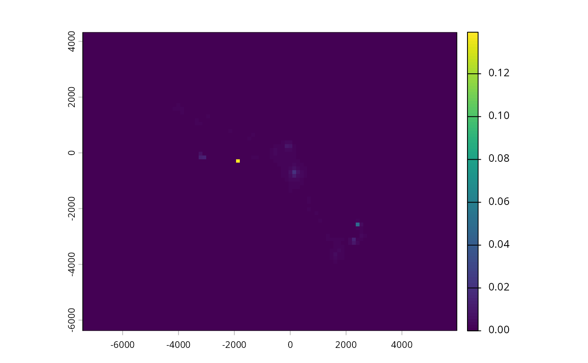

Dynamic Brownian Bridge Movement Model — Utilisation Distribution
Source:R/dbbmm_ud.R
mt_dbbmm_ud.RdCompute a utilisation distribution (UD) from a movement track using
the dynamic Brownian bridge movement model. Accepts a move2 object
directly (estimates variance internally), a pre-computed variance
object, or a named list of variance objects for multi-track input.
Usage
mt_dbbmm_ud(
object,
raster = NULL,
location_error = NULL,
margin = 11,
window_size = 31,
ext_factor = 0.5,
dim_size = NULL,
time_step = NULL,
verbose = TRUE,
location_error_na = "median",
res = NULL,
ext = NULL,
...
)Arguments
- object
One of:
A
move2object (single or multi-track; any CRS — see “Coordinate reference systems” below). Variance is estimated internally viamt_dbbmm_variance().An
mt_dbbmm_varianceobject frommt_dbbmm_variance().A named list of
mt_dbbmm_varianceobjects (multi-track).
- raster
A
terra::SpatRastertemplate: the UD is computed for its cells and returned on that grid. A template is never enlarged; if it is too small for the bridges, the call stops and says on which sides; when the template is in the CRS the computation runs in, it also gives theterra::extend()call that fixes it. Give at most one ofraster,resanddim_size; with none, a grid is built fromdim_size = 100. (A number here is the deprecated way of givingres.)- location_error
Per-fix horizontal 1-sigma positional error, in metres. When
objectis amove2object, this is forwarded tomt_dbbmm_variance()(see that function for the full set of accepted forms: NULL / scalar / vector / column name /"auto"). Whenobjectis anmt_dbbmm_varianceobject or a list of them, the defaultNULLre-uses the per-fix vector stored on each variance object at fit time; supplying an explicit value here overrides it.- margin
Integer (odd). Margin for variance estimation window. Only used when
objectis amove2object.- window_size
Integer (odd). Window size for variance estimation. Only used when
objectis amove2object.- ext_factor
Numeric, non-negative. Fraction of the track's bounding-box width and height added on each side of an automatically built grid. Default 0.5. If that box is too small for the bridges, the grid is enlarged to fit them (see “Grid”).
- dim_size
Integer, at least 2. Number of cells along the longest side of an automatically built grid. Higher values give finer resolution but slower computation. Used when neither
rasternorresis given, with a default of 100.- time_step
Numeric or
NULL. Time step for the Brownian bridge integration, in minutes. Defaults to 1/15 of the minimum time lag. Smaller values give more precise UDs but are slower.- verbose
Logical. If
TRUE, print a computational size estimate, report progress for multi-track input, and say when an automatic grid had to be enlarged.- location_error_na
Strategy for filling
NAs in a per-fixlocation_errorvector. Forwarded tomt_dbbmm_variance()whenobjectis amove2; ignored otherwise (the variance object already carries the imputed vector).- res
Numeric. Cell size of an automatically built grid, in map units of the compute CRS (metres). Cells are square. For multi-track input, one common grid covers all tracks. A grid built from
resordim_size, enlarged or not, may have at mostgetOption("move2utils.ud_max_cells", 1e8)cells; above that the call stops before anything is allocated (classmove2utils_ud_grid_too_large) and suggests a largerres.- ext
Deprecated former name of
ext_factor. Renamed because interraextdenotes an extent.- ...
Additional arguments passed to methods.
Value
For single-track input: a terra::SpatRaster where cell
values sum to 1.0, representing the utilisation distribution.
For multi-track input: a multi-layer terra::SpatRaster with one
named layer per track, all on a common grid. Each layer sums to 1.0.
Details
The UD is computed by evaluating the Brownian bridge probability density at regular time steps along each segment and accumulating the density onto a raster grid. The computation is implemented in C with OpenMP parallelisation of the inner grid loops for performance.
For multi-track input, a common raster grid is computed from the combined spatial extent of all tracks, ensuring that UDs are directly comparable.
Coordinate reference systems
The UD is returned in the same CRS you provide, so it overlays directly
on your other layers: give longitude/latitude and you get a long/lat UD,
give UTM and you get a UTM UD. The Brownian-bridge math needs metric
coordinates, so when the target CRS is already projected in metres it is
used directly (lossless); longitude/latitude (or any non-metric CRS) is
computed in a local AEQD and the resulting UD is then reprojected back to
your CRS and renormalised so it still sums to 1. If you pass an
environmental raster as raster, the UD is returned on that grid
(reprojecting the movement internally if needed), ready to stack against
your environmental layers. The reprojection of a long/lat UD resamples
the surface; supply your data in a suitable metric projection if you want
to avoid that step entirely.
Grid
The grid is either the template given as raster, or it is built
automatically: the track's bounding box, widened by ext_factor, divided
into square cells of size res or into dim_size cells along its longest
side. The kernel spreads each bridge time step over four standard
deviations around the bridge mean, so the grid has to reach that far
beyond the track. An automatic grid that does not is enlarged until it
does: with res the cell size holds and cells are added; with dim_size
the cell count holds and the cells grow. A grid that is large enough is
used unchanged, so results are identical to earlier versions wherever
those succeeded. A template is never enlarged: if it is too small the
call stops and says on which sides. Grids need at least two rows and two
columns.
Coming from move
mt_dbbmm_ud() is the port of move::brownian.bridge.dyn(), and its C
kernel is move's. Arguments map as follows: a RasterLayer as raster
becomes a SpatRaster template as raster; a number as raster (the
cell size) becomes res; dimSize becomes dim_size; ext becomes
ext_factor; bbox becomes a template,
raster = terra::rast(<extent>, resolution = <cell size>, crs = <crs>).
The defaults differ: move uses ext = 0.3 and dimSize = 10, this
package ext_factor = 0.5 and dim_size = 100. Where move stops
because the grid is too small, an automatic grid is enlarged here
instead. move's kernel also accepts a grid on which its window reaches
exactly one cell beyond the last row or column, and then reads and writes
outside the grid; such a grid counts as too small here. Given the same
grid and the same variance, the UD agrees with move to within 3e-9
relative (measured on move::leroy).
References
Kranstauber, B., Kays, R., LaPoint, S. D., Wikelski, M., & Safi, K. (2012). A dynamic Brownian bridge movement model to estimate utilization distributions for heterogeneous animal movement. Journal of Animal Ecology, 81(4), 738-746. doi:10.1111/j.1365-2656.2012.01955.x
See also
mt_dbbmm_variance() to compute variance separately,
mt_dbgb_ud() for the directional variant, mt_motion_variance()
to extract variances.
Examples
library(move2)
library(move2utils)
library(sf)
fishers <- mt_read(mt_example())
fishers <- fishers[!st_is_empty(fishers), ]
leroy <- filter_track_data(fishers, .track_id = "M1")
## the first 200 fixes keep the example quick
leroy <- st_transform(leroy, mt_aeqd_crs(leroy))[seq_len(200), ]
## One step: variance and UD
ud <- mt_dbbmm_ud(leroy, location_error = 25,
window_size = 31, margin = 11)
#> Computational size: 4.5e+07
terra::plot(ud)

## Two steps: fit the variance once, re-use it for other grids
var_obj <- mt_dbbmm_variance(leroy, location_error = 25,
window_size = 31, margin = 11)
ud_fine <- mt_dbbmm_ud(var_obj, dim_size = 300, ext_factor = 1.25)
#> Computational size: 4.0e+08
ud_50m <- mt_dbbmm_ud(var_obj, res = 50)
#> Computational size: 3.2e+08